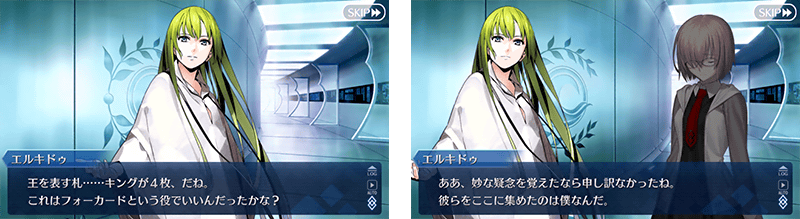
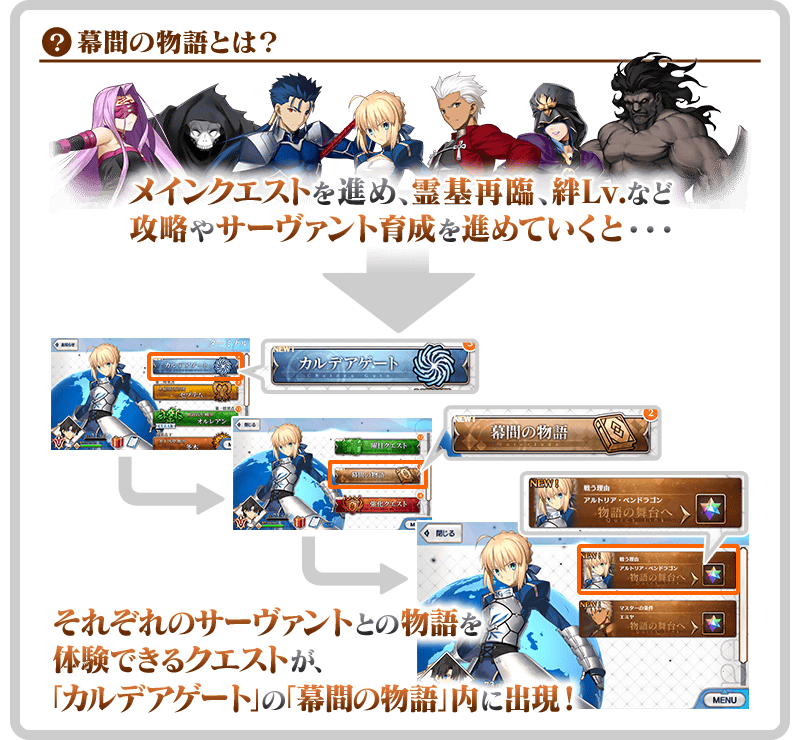

開放恩奇杜的幕間物語。 ◆開放時間◆ 2018年3月20日(二) AM0:00～ ◆關卡開放條件◆ 章節通過:通過亞種特異點Ⅰ 靈基再臨:第2階段 絆Lv.4 ◆關卡通過報酬◆ 聖晶石 1個   於現在舉辦中的期間限定「迦勒底男孩收藏2018Pick Up召喚(每日交替)」2018年3月19日(一) 23:00～3月20日(二) 22:59的期間「恩奇杜」Pick Up中！ 詳細請自下述橫幅確認。